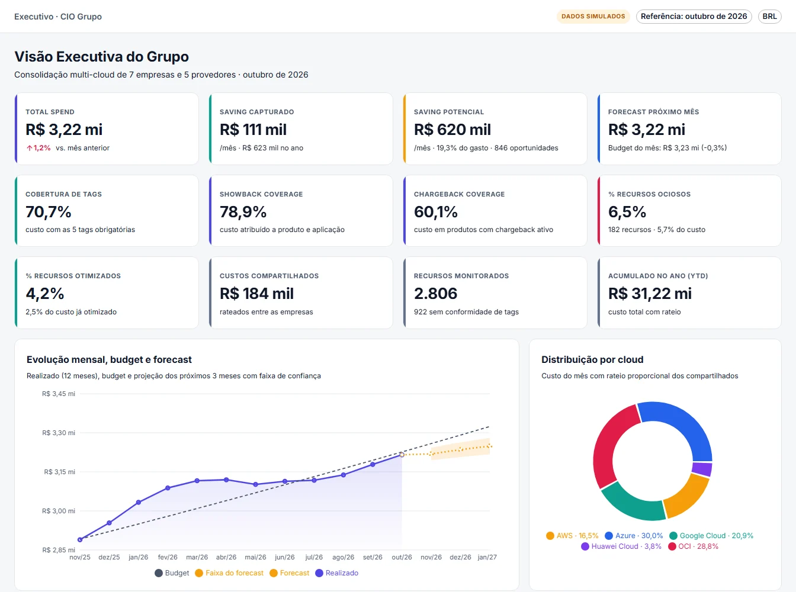
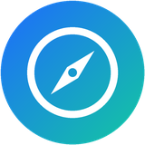
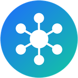
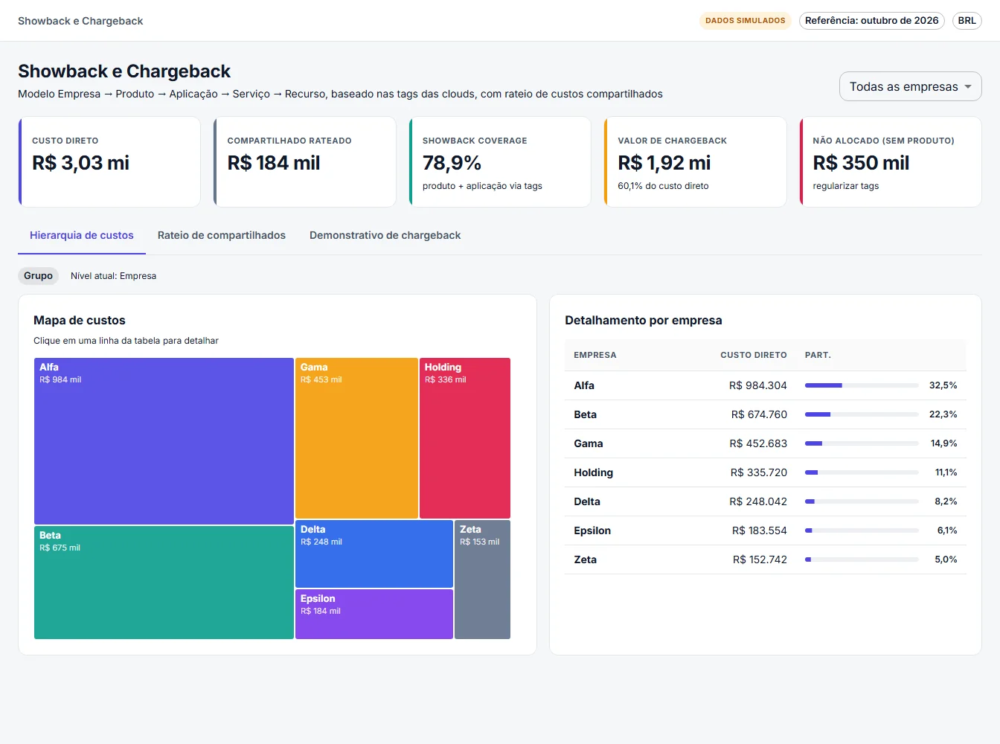
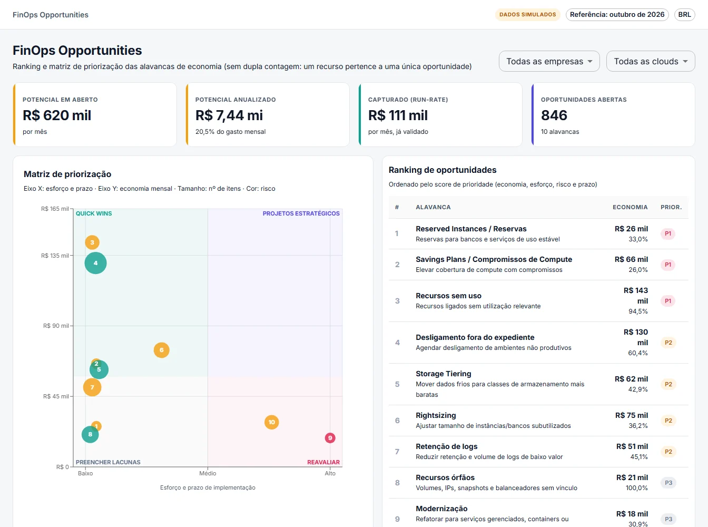
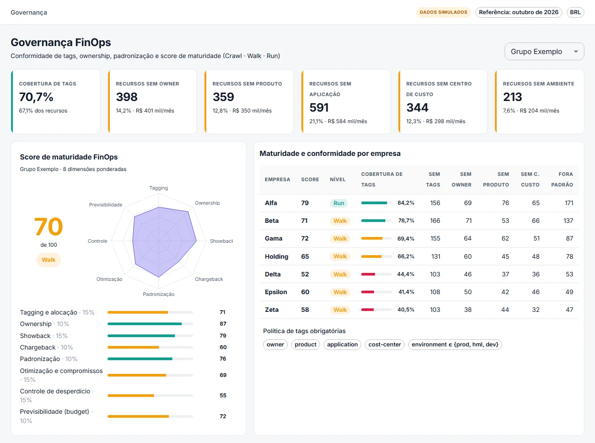
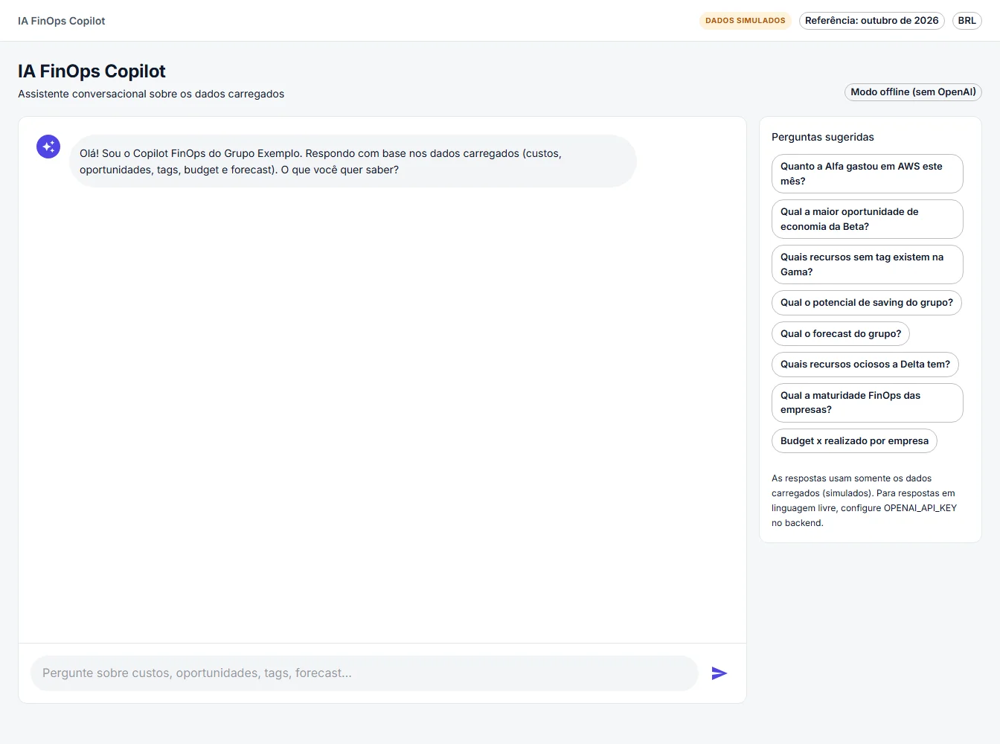
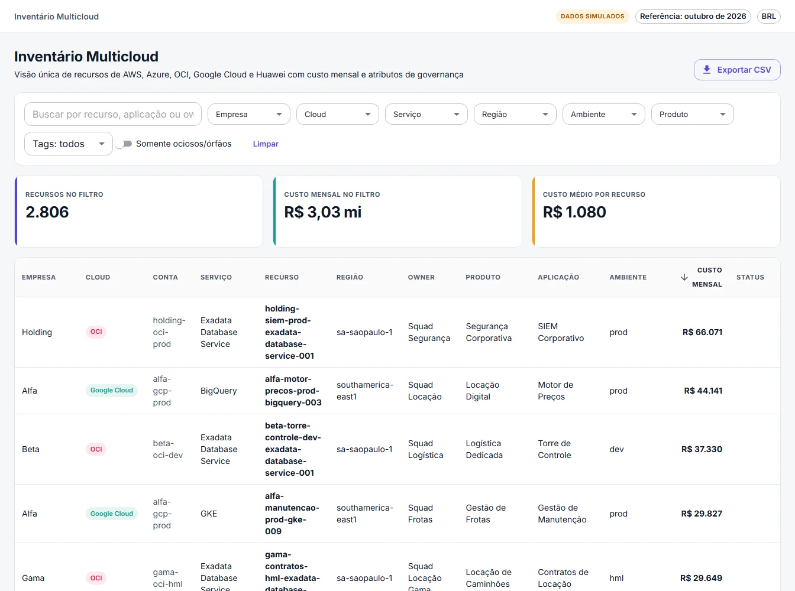
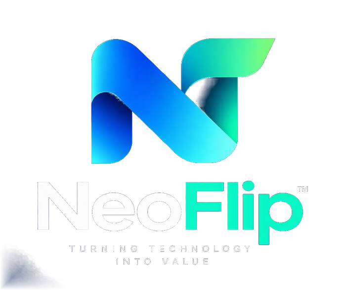

Multi-cloud sem direção
Sem critério único de escolha entre provedores ou tecnologias.
Consultoria estratégica + plataforma SaaS de FinOps
Estratégia, governança e FinOps multicloud: do plano ao painel.
Para quem usa uma ou várias clouds, como:

O desafio
Se essas perguntas não têm resposta clara hoje, é um sinal de que falta direção, visibilidade ou governança.
Sem critério único de escolha entre provedores ou tecnologias.
Sem showback, ninguém enxerga o efeito das próprias decisões.
Escopo, câmbio e premissas distintos entre ofertas e contratos.

Risco de decidir pelo preço nominal, e não pelo custo real.
Quem somos
Consultoria e tecnologia no mesmo lugar, para transformar cloud em decisão, governança e valor.
Nossas soluções
Gestão de FinOps em empresas
Plano estratégico de cloud corporativa

Estruturação do Cloud Center of Excellence
Modelo de resiliência aplicacional
Gestão ágil por indicadores
Sistema de gestão de FinOps multicloud
Para o seu ecossistema
Cada empresa tem um cenário diferente: uma cloud ou várias, uma área ou um grupo inteiro. Marque o que se parece com a sua realidade.
Selecione ao menos uma situação para ver as soluções mais indicadas.
Indicação orientativa; o escopo real é definido em uma conversa de diagnóstico.
Plataforma SaaS de FinOps
Do gasto ao ganho: veja, priorize e governe o custo de cloud, por área, produto e aplicação.
Consolidação do custo de uma ou várias empresas e clouds, com evolução mensal, budget e forecast.

Hierarquia Empresa, Produto, Aplicação, Serviço e Recurso, baseada nas tags das clouds.

Ranking e matriz de priorização de 10 alavancas de economia, sem dupla contagem.

Conformidade de tags e ownership, com score de maturidade Crawl, Walk e Run em 8 dimensões.

Assistente conversacional sobre os dados carregados, com perguntas sugeridas.

Visão única dos recursos das clouds conectadas, com custo mensal e atributos de governança.
Telas da demonstração, com dados simulados de um grupo fictício. A plataforma atende uma única cloud ou várias.
A plataforma está em desenvolvimento e tem demonstração disponível. Os dados da demonstração são fictícios; os conectores com as APIs oficiais dos provedores foram escritos e entram em validação com contas reais na fase de piloto.
Como trabalhamos
Três fases de diagnóstico e decisão, seguidas de uma mobilização opcional para colocar o modelo em operação.
Baseline conciliado e Assessment Corporativo, com fatos validados.
Gate 1Provedores, TCO, FinOps, governança e placement com a mesma régua.
Gate 2Estratégia, business case, roadmap e modelo operacional para decidir.
Gate 3CCoE, showback e políticas v1 em operação, com pilotos.
Gate de escalaPrazos dimensionados ao porte e ao escopo de cada empresa. Execução técnica pelo cliente ou por parceiros contratados à parte. Fora do escopo: migrações, mudanças em produção, negociação comercial com provedores, implantação de ferramentas de terceiros e garantia de economia.
Valor para o seu negócio
Metas quantitativas são definidas após validar o baseline; economias só contam depois de validadas por Finanças.
Cenários
Do primeiro passo em cloud a grupos com várias empresas e provedores: o ponto de partida muda, o método permanece.
Situação: cada área escolheu seu provedor e não há critério comum.
Entregamos: critérios de escolha, cloud placement e roadmap.
Situação: ofertas com escopo, câmbio e premissas diferentes.
Entregamos: base comum de comparação e TCO por cenário.
Situação: o gasto cresce e ninguém responde por ele.
Entregamos: tags, ownership, showback, chargeback e alavancas de economia.
Situação: sem mandato, fóruns nem regras para exceções.
Entregamos: desenho do CCoE, RACI e modelo operacional.
Situação: RTO, RPO e DR não estão definidos nem testados.
Entregamos: classes de criticidade e diretrizes de resiliência.
Situação: decisões sem metas, donos ou cadência de revisão.
Entregamos: OKRs e KPIs acompanhados de forma ágil.
Sua jornada
Cada degrau com metas, dono e cadência, acompanhados por OKRs e KPIs.
Horizontes de referência; calibrados com o baseline de cada empresa.
